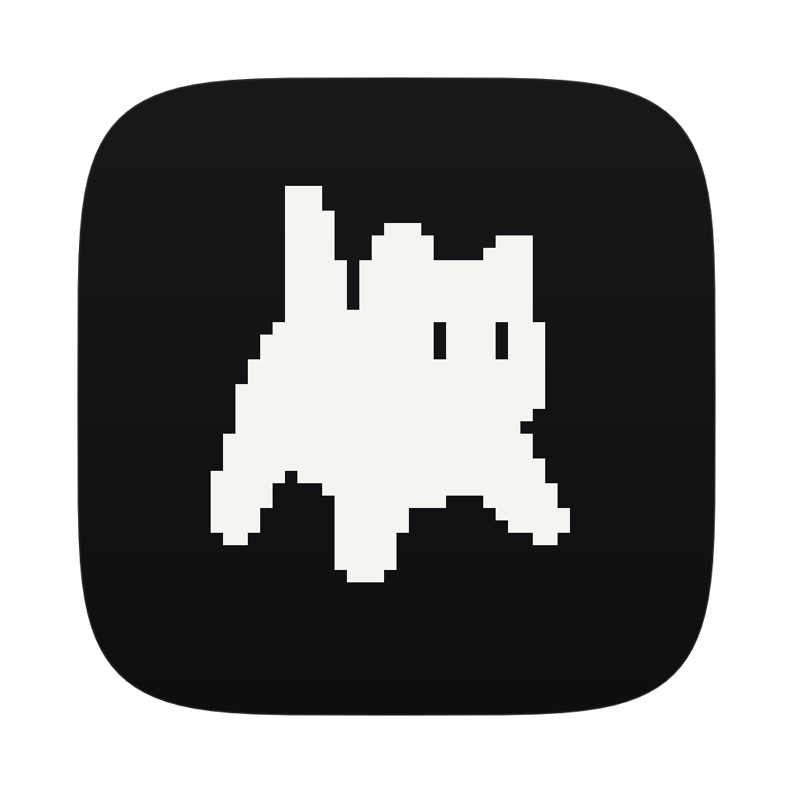
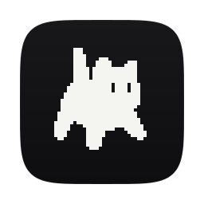
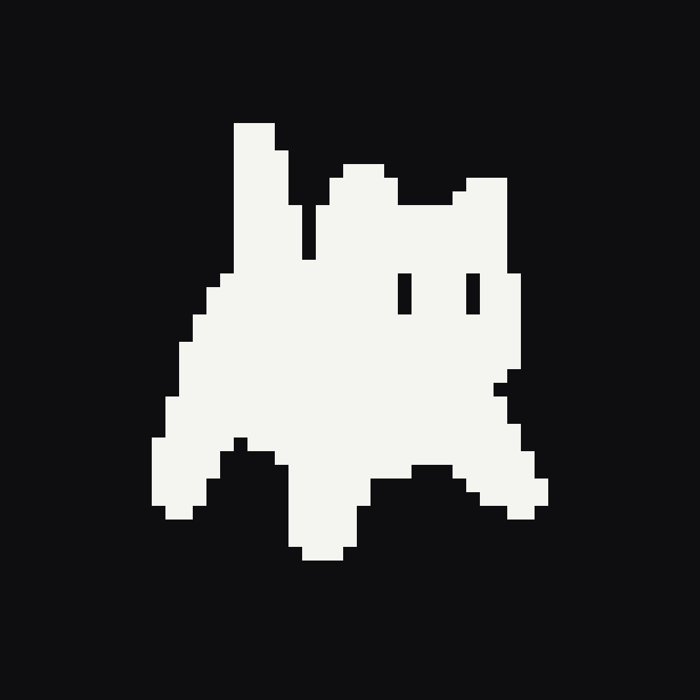

Cat logo kit
Traced cell for cell from the source image: a 29 x 32 cell cat (the image's grid is 58 cells across at 8.62 px a cell). Eyes are holes, so the background shows through. Everything below is at real size except where a caption says otherwise.
Master: cat-black.svg, cat-white.svg
36 x 36 cell viewBox; the cat sits at 3 cells left, 4 right, 2 top and 2 bottom (an odd width in an even square can't centre on whole cells). Use black on light and white on dark.

UI glyphs (currentColor): cat-glyph.svg, cat-glyph-16.svg
Filled, taking the text colour. cat-glyph-16 is a 15 x 16 cell reduction (2 x 2 majority, eyes put back), pixel-exact at 16 px and 32 px: use it at 16.
cat-glyph at 16, 20, 24, 32, 48; then cat-glyph-16 at 16 and 32
Outline (1.5 px stroke, currentColor): cat-outline.svg, cat-outline-simple.svg
The exact stepped outline is good from about 32 px; below that the steps and eyes blur together. The simple version (21 points, Douglas-Peucker on the traced silhouette, eyes as two strokes) holds up at 20 and 24 px. At 16 px, use the filled cat-glyph-16. Both strokes stay 1.5 px at any size (vector-effect: non-scaling-stroke).
cat-outline at 16, 20, 24, 32, 48
cat-outline-simple at 16, 20, 24, 32, 48
In the header (mock)
The cat as a 26 px button left of the 26 px cube box, as it would sit in void's terminal header (.thl).
Outline cat at 18 px in a 26 px button, then a stand-in for the cube
macOS app icon: AppIcon.icns, macos/icon-*.png
Near-white cat (#f4f4f1) on a near-black squircle (#0e0e10 with a faint top light and hairline edge). void is a black canvas, and the icon reads as a window onto it; the light cat stays strong in a light or dark Dock. The cat is 16 px a cell on 1024, so it lands on whole pixels at 1024, 512, 256, 128 and 64. At 32 it's the 15 x 16 reduction at 1 px a cell; at 16 it's the favicon tile.


iOS: icon-1024.png
Opaque, full bleed (iOS applies the mask). Cat at 20 px a cell.

Favicons: favicon.ico (16, 32, 48), favicon-32.png, apple-touch-icon.png
The 16 and 48 px frames live inside favicon.ico; this page uses it as its own tab icon.
Files
| AppIcon.icns | 106.8 KB |
| apple-touch-icon.png | 952 B |
| cat-black.svg | 409 B |
| cat-glyph-16.svg | 318 B |
| cat-glyph.svg | 389 B |
| cat-outline-simple.svg | 635 B |
| cat-outline.svg | 461 B |
| cat-white.svg | 409 B |
| favicon-32.png | 434 B |
| favicon.ico | 14.7 KB |
| icon-1024.png | 5.8 KB |
| macos/icon-1024.png | 30.8 KB |
| macos/icon-128.png | 2.6 KB |
| macos/icon-16.png | 271 B |
| macos/icon-256.png | 5.5 KB |
| macos/icon-32.png | 651 B |
| macos/icon-512.png | 12.9 KB |
| macos/icon-64.png | 1.3 KB |
| src/appicon-ios.svg | 570 B |
| src/appicon-macos-small.svg | 3.5 KB |
| src/appicon-macos.svg | 3.6 KB |
| src/apple-touch.svg | 484 B |
| src/build.py | 8.0 KB |
| src/favicon-16.svg | 365 B |
| src/favicon-32.svg | 362 B |
| src/favicon-48.svg | 463 B |
| src/grid-small.json | 752 B |
| src/grid.json | 2.8 KB |
| src/render.sh | 2.0 KB |
| src/sample.py | 812 B |
Rebuild: python3 -I src/build.py src/grid.json . then src/render.sh.